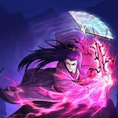
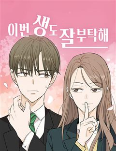
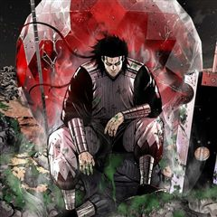
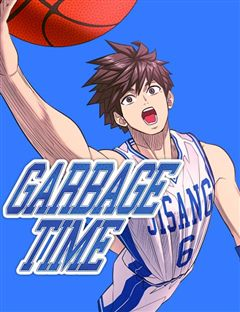

성장·우정 웹툰 추천 TOP 30
성장물, 우정, 소년물, 성장드라마, 스포츠성장 같은 태그가 붙은 작품을 모았어요. 네이버웹툰·카카오웹툰·레진코믹스에서 조건에 맞는 작품 521개 중 인기 순으로 30개를 골랐어요. 인기 TOP 3: 외모지상주의, 관존 이강진, 신의 탑
2026-10-04 기준 · 성인 작품 제외
내 취향으로 더 좁혀서 추천받기 →-
1
 네이버웹툰
네이버웹툰외모지상주의
못생기고 뚱뚱하다고 괴롭힘을 당하며 루저 인생만 살아온 내가 잘생겨졌다는 이유로 인싸가 됐다. 어느 날 자고 일어났더니 갑자기 완벽한 외모와 몸을 지닌 사람이 되어 깨어난다면?
성장물소년물사이다학원액션참교육네이버웹툰에서 보기 → -
2

카카오웹툰관존 이강진
미친놈인가? 아니면 흔한 관심종자인가? 사람의 다름을 이해 못 하는 제자 이강진. 그리고 그걸 이해시켜주고자 하는 스승 곽노. 두 사제師弟의 따뜻한 휴먼스토리.
성장물액션카카오웹툰에서 보기 → -
3

-
4

-
5
 네이버웹툰
네이버웹툰전지적 독자 시점
'이건 내가 아는 그 전개다' 한순간에 세계가 멸망하고, 새로운 세상이 펼쳐졌다. 오직 나만이 완주했던 소설 세계에서 평범했던 독자의 새로운 삶이 시작된다.
구원서사레드아이스 스튜디오게임세계관아포칼립스네이버웹툰에서 보기 → -
6
 네이버웹툰
네이버웹툰소녀의 세계
완벽해 보이지만 사실 외로웠던 백조들과 맘씨 착한 오리가 만나 여러 갈등을 함께 겪으며 진짜 친구가 되어가는 소녀들의 찐 우정물
우정설렘폭발공감청춘외유내강녀네이버웹툰에서 보기 → -
7

네이버웹툰이번 생도 잘 부탁해
전생을 기억하는 삶은 어떨까? 매번 전생을 기억하는 무료한 삶을 살던 18회차 인생, 윤주원이란 이름으로 살던 12살에 서하를 만나게 된다. 특별할 거 없던 그 아이가 무료한 삶을 특별하게 만들어주었지만 교통사고로 18회차 인생이 끝나고 만다. 다시 태어난 19회차 인생, 윤주원에서…
구원서사몰아보기폭스남재회네이버웹툰에서 보기 → -
8
 네이버웹툰
네이버웹툰더 복서
재능있는 복서를 찾던 전설적인 트레이너 K는 기묘한 소년을 발견한다. 그의 충격적인 재능은 과연 축복일까, 저주일까?!
스포츠성장몰아보기명작격투기힐링네이버웹툰에서 보기 → -
9
 카카오웹툰
카카오웹툰군림천하
"너만은 꼭 군림천하 해야 한다!” 그 한마디로 진산월의 운명이 결정됐다. 스물세 살, 그는 종남파의 장문인이 되었다. 남은 이들은 단 8명의 제자뿐. 한때 천하제일을 꿈꿨지만, 지금은 명맥만을 잇는 문파. 사부의 유지를 위해, 살아남기 위해— 진산월은 비정한 강호로 나아간다.
성장물자극적인액션카카오웹툰에서 보기 → -
10
 네이버웹툰
네이버웹툰입학용병
어린 시절 비행기 추락 사고의 유일한 생존자 유이진. 살아남기 위해 용병으로 살아가던 유이진은 10년 후, 가족이 있는 고향으로 돌아왔다.
우정사이다학원액션가족참교육네이버웹툰에서 보기 → -
11

카카오웹툰레드스톰 - 왕의 귀환
피에 젖은 사막. 붉은 사막을 용납할 수 없던 한 소년. 소년은 사막의 무신이 되어 사막을 구하지만 이제는 세계가 피에 젖으려 한다. 무신은 이제 사막을 넘어 세계를 구하려 한다. “4년 만에 돌아온 그로우, 왕의 귀환. 이제는 사막에서 전쟁을 보여줘야 할 때다.”
성장물액션카카오웹툰에서 보기 → -
12
 네이버웹툰
네이버웹툰하루만 네가 되고 싶어
'완벽한 인생이었다, 그 애가 나타나기 전까지는' 반전에 반전을 거듭하는 치밀한 궁중 서스펜스 네이버웹툰 최강자전 19년 대표작.
구원서사서양왕족/귀족대형견남순정남네이버웹툰에서 보기 → -
13
 네이버웹툰
네이버웹툰사신소년
수명을 대가로 죽은 자의 능력을 빌리는 소년! 화려한 액션에서 부터 스포츠, 두뇌 플레이까지 한계는 없다!
소년물액션판타지학원액션현대동양네이버웹툰에서 보기 → -
14
 네이버웹툰
네이버웹툰퀘스트지상주의
[외모지상주의], [싸움독학], [인생존망]과 세계관을 공유하는 작품! 공부, 싸움, 외모. 뭐 하나 잘난 것 없는 평범한 고등학생 ‘김수현’의 눈앞에 갑자기 퀘스트창이 나타났다! 첫 번째 퀘스트, [엄마한테 사과하기]를 완료한 수현은 보상으로 키가 3cm 커지게 되는데! 퀘스트 엄청…
우정사이다집착녀현대게임네이버웹툰에서 보기 → -
15
 네이버웹툰
네이버웹툰1초
구조율 100%의 전설적인 소방관. 그의 특별한 능력은 긴장하는 순간, 미래가 보인다는 것! 촌각을 다투는 진짜 소방관들의 이야기
성장드라마눈물샘자극현대이능력청춘네이버웹툰에서 보기 → -
16
 카카오웹툰
카카오웹툰무한의 마법사
마굿간에 버려져 평민으로 키워진 아이, 시로네. 타고난 통찰력으로 글까지 깨우친 아이는 도시로 나간 어느 날 그토록 궁금해하던 마법을 경험한다. 그 길로 마법사를 꿈꾸게 된 시로네. 하지만 신분의 장벽이 두터운 이 곳은 아이에게 냉혹하고, 그는 채 어른이 되기도 전에 이 세상의 이면을…
성장물미스터리학원물카카오웹툰에서 보기 → -
17
 네이버웹툰
네이버웹툰일렉시드
<노블레스> 손제호 작가와 <소녀더와일즈> 제나 작가가 만났다! 고양이 몸에 깃든 각성자 카이든과 각성능력을 숨겨온 고등학생 지우 러블리 2인조의 액션 판타지
성장드라마이능력배틀아카데미물세계관네이버웹툰에서 보기 → -
18

-
19
 네이버웹툰
네이버웹툰초인의 시대
지구에 근원 모를 괴물들이 출현하고 그들을 제압하는 '초인'들 또한 등장한다. 정체불명의 괴물과 초인, 바야흐로 '초인의 시대'가 도래한다!
소년물액션판타지현대판타지최강자전네이버웹툰에서 보기 → -
20
 네이버웹툰
네이버웹툰내가 키운 S급들
F급 헌터. 그것도 잘나가는 S급 동생 발목이나 잡는 쓸모없고 찌질한 F급 형. 개판된 인생 대충 살다가 결국 동생 목숨까지 잡아먹고 회귀한 내게 주어진 칭호, '완벽한 양육자'. 그래, 이번에는 나대지 말고 얌전히 잘난놈들 뒷바라지나 해 주자. 라고 생각했는데, S급들이 좀 이상하다.
우정현대판타지현대상태창크리처네이버웹툰에서 보기 → -
21

-
22
 네이버웹툰
네이버웹툰세기말 풋사과 보습학원
어릴 때 알던 재수없던 놈이 더 재수없는 놈이 되어 돌아왔다! 중3 황미애의 옆 빌라에 어릴 때 잠깐 시골에서 봤던 김철이 이사 와 같은 학교 같은 반이 되고 '철이와 미애'라 놀림 받자 김철은 미애를 불쾌해하며 피한다. 너만 불쾌한 줄 알아? 나쁜 놈! 미애는 속이 상하지만 그럼에도…
성장드라마설렘폭발청춘무심남능글남네이버웹툰에서 보기 → -
23
 네이버웹툰
네이버웹툰별을 품은 소드마스터
기사를 동경하는 슬럼가의 부랑아 블라드. 검은 벼락을 맞는 사고 이후부터 들리기 시작한 누군가의 목소리와, 어느 날 갑자기 등장한 푸른 달빛의 기사가 블라드의 세계를 산산조각내면서 뒷골목 소년의 삶이 송두리째 변하기 시작하는데... 높디높은 밤하늘에 있지 않더라도, 아무도 보지 못하는…
성장물소년물중세판타지액션시리어스서양네이버웹툰에서 보기 → -
24
 카카오웹툰
카카오웹툰만렙 플레이어의 100번째 회귀
전세계적으로 15세부터 29세는 무조건 참가해야 하는 총 20라운드의 데스게임. 이 게임에 회귀특성으로 100번째 도전을 시작하게 된 주인공이 99번의 경험으로 얻은 정보를 이용해 남들보다 압도적으로 강해지는 사이다물. 마지막 라운드의 조건이 최소 5명인 걸 깨닫고, 실패를 반복하지…
성장물미스터리학원물카카오웹툰에서 보기 → -
25

-
26
 네이버웹툰
네이버웹툰66666년 만에 환생한 흑마법사
강대했던 흑마법사 디아블로 볼피르. 12신의 계략에 당해 억겁 속에 봉인되었지만, 그로부터 66666년이 흘러 다시금 이 땅에 강림한다! "응애!" 웰턴 백작의 갓 태어난 장남으로. 딥다크 매직 판타지 시작!
성장물중세판타지액션서양신화마법네이버웹툰에서 보기 → -
27
 네이버웹툰
네이버웹툰마른 가지에 바람처럼
남편을 잃고, 아이를 빼앗기고, 이제 생매장을 눈 앞에 둔 과부 리에타. 그 곳에 ‘미친 폐황자’로 불리는 저주받은 땅, 악시아스 성의 대공. 킬리언이 나타났다. 그녀를 데려가겠다고 말하는 킬리언이 인사를 건넨다. “안녕, 요부”
구원서사설렘폭발서양이능력왕족/귀족네이버웹툰에서 보기 → -
28

-
29
 네이버웹툰
네이버웹툰쪽팔려게임
고등학교 2학년 유사랑은 반에서 묘한 취급을 받는다. 같은 반 친구들의 쪽팔려게임에서 놀이에 껴있지도 않은 유사랑이 자꾸 벌칙의 대상이 된다. 반 친구들도 유사랑의 인격이 어딘가 어긋나 있는 걸 어렴풋이 느끼기 때문이다.
우정고자극드라마자극적인시리어스로맨스네이버웹툰에서 보기 → -
30
 카카오웹툰
카카오웹툰더 챌린저
'루저', '약자', '땅바닥'. 모두 현실에서 나를 부르는 호칭들이다. 하지만 그건 전부 '현실'에서의 이야기일 뿐. 가상현실 게임에서조차 '루저'라는 법은 없잖아? 게임 속에서 나는 최고가 된다! '루저' 박노아의 프로게이머 도전기. <THE CHALLENGER>
성장물사이다카카오웹툰에서 보기 →